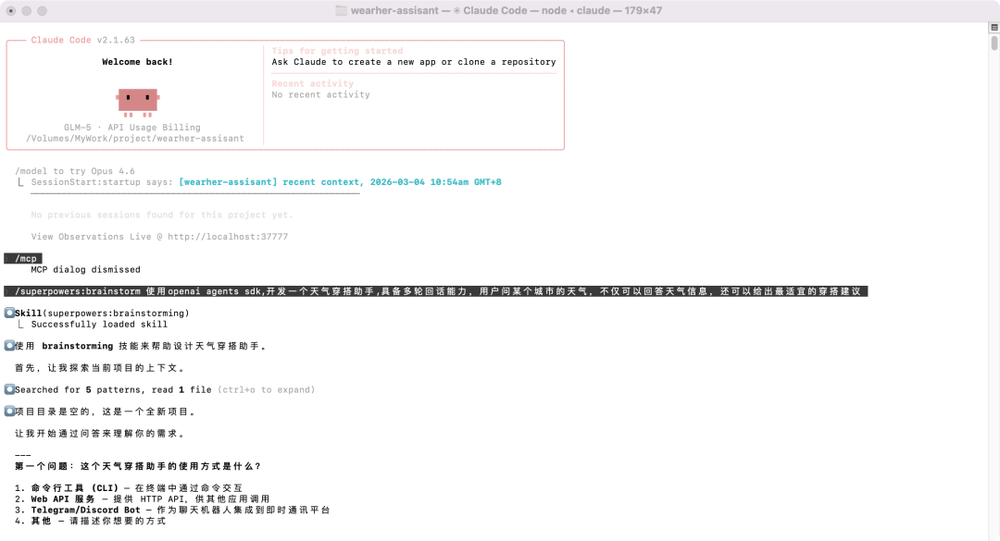
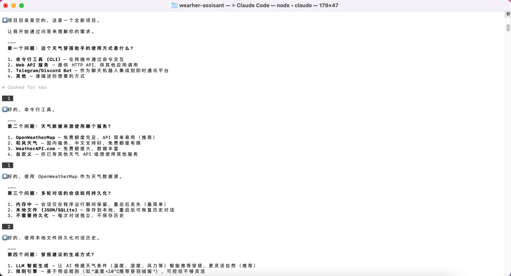
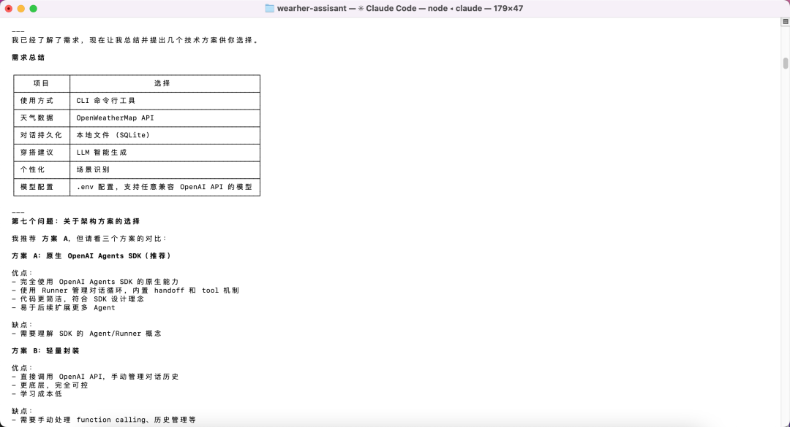
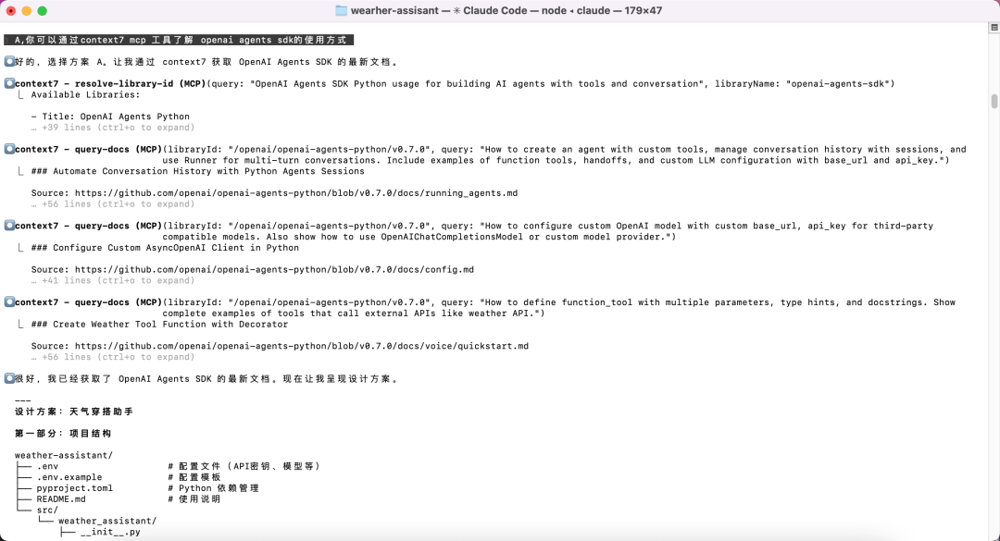
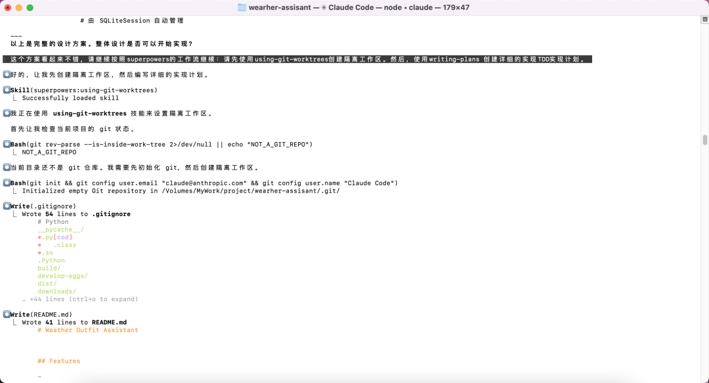
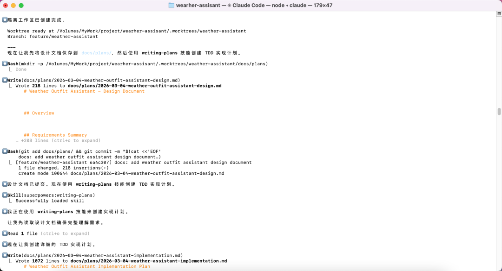
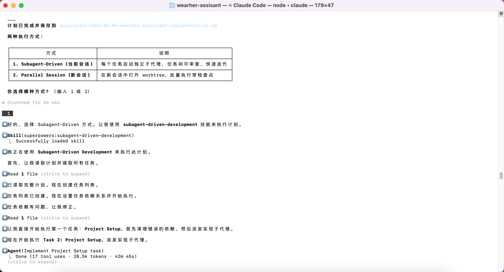
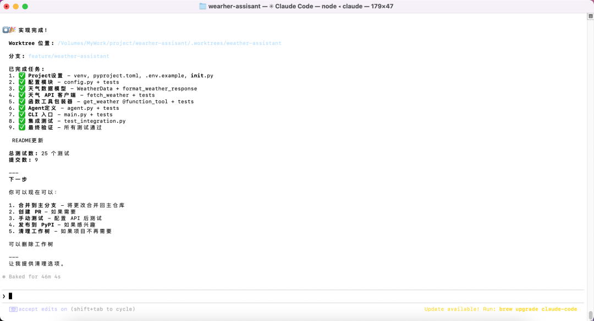
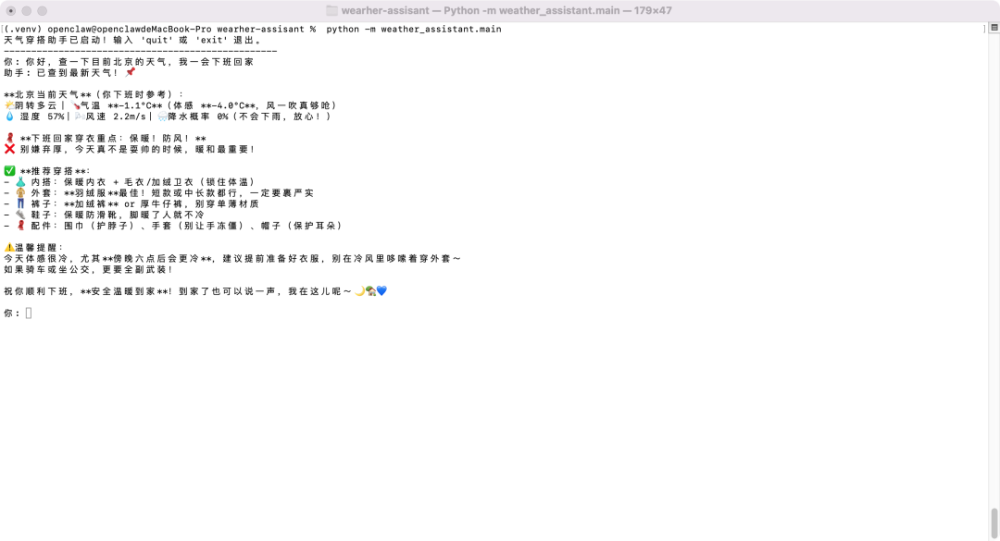
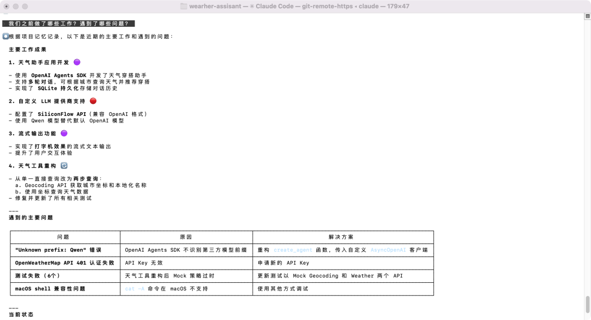

第一个场景：你昨天和AI一起调试了整整半天，终于找到了数据库连接池泄漏的根因，解决方案优雅而精准。今天你打开新会话，继续开发下一个模块——AI把昨天踩过的坑原原本本地踩了一遍。你忍不住想：我昨天明明教过它了啊。
第二个场景：你对AI说「帮我做个用户登录功能」，它二话不说就开始写代码。半小时后，你得到了一个能跑起来的功能——但没有测试、没有设计文档、边界情况一堆。你不知道它是怎么想的，它也不知道你真正想要什么。
这两个场景，说的是同一个问题的两个侧面：AI编程助手还不够「靠谱」。第一个问题，是记忆的缺失；第二个问题，是工程思维的缺失。今天要介绍的两个工具——Claude-Mem 和 Superpowers——正是分别从这两个方向，补上AI编程助手最关键的短板。
第一块短板：它不记得你教过它什么
传统AI编程助手每次会话都是「从零开始」。它不记得之前解决过什么问题，不记得你之前拒绝过什么方案，也不记得你的项目走到了哪一步。这不是AI的错，而是架构上的先天缺陷。
Claude-Mem 正是为了填补这个缺陷而生的。它是一个专为 Claude Code 设计的「持久记忆插件」，像一个默默工作的「记事本」，在你和AI一起编程时自动记录发生了什么：你使用了哪些工具、AI做了哪些操作、关键的决策和结论、代码的结构和设计思路。这些记录会被压缩成语义摘要，存入本地数据库。下次你启动新会话时，它会自动把这些「记忆」注入到上下文中，让AI从第一句话开始就能「想起」之前的工作。
比如，你昨天刚和AI一起重构了数据库层的代码。今天你说「继续开发用户模块」，AI会自动知道数据库层已经重构过了，不会再重复那些修改。
五个「钩子」撑起记忆体系
Claude-Mem 的核心是五个生命周期钩子（Lifecycle Hooks），你可以把它们理解为「监听器」，在 Claude Code 的每个关键节点自动触发：
SessionStart —— 会话开始时，查询之前的相关记忆并注入新会话上下文。
UserPromptSubmit —— 当你提交问题时，分析你的意图，判断是否需要从记忆库中检索相关信息。
PostToolUse —— 每次工具调用后，记录工作痕迹。AI刚读完文件、刚写完代码、刚跑完测试——这些都会被捕获。
Summary —— 会话中定期压缩积累的记录，把详细日志变成「读书笔记」。
SessionEnd —— 会话结束时，确保所有记录正确落库。
这套机制用 TypeScript 实现，数据存储在本地 SQLite 数据库（~/.claude-mem/claude-mem.db），可靠而私密。
像搜索引擎一样查询过去
光记下来还不够，能找到才是关键。Claude-Mem 提供了混合搜索策略：传统的全文搜索（SQLite FTS5）加上向量语义搜索（Chroma 数据库）。前者精确匹配关键词，后者理解语义——你搜「认证问题」，它不仅能找到包含「认证」的内容，还能关联到「登录失败」「权限校验」等相关记录。
搜索遵循「三层工作流」：先用 search 拿到紧凑的索引摘要（每条约 50-100 token），再用 timeline 了解时间线上下文，最后用 get_observations 按需获取完整细节。相比直接拉取所有细节，这种设计能节省约 10 倍的 token 消耗。
此外，Claude-Mem 还提供了一个 Web 可视化界面（http://localhost:37777），可以实时查看记忆流、自然语言搜索历史、给重要记忆打标签。对于团队协作场景，它还支持通过 Telegram、Discord、Slack 推送实时观察通知。
对于不想被记录的内容，用 <private>内容</private> 标签包裹即可。剥离发生在钩子层，敏感信息永远不会进入记忆库。
第二块短板：它不知道怎么「做工程」
解决了记忆问题，AI编程助手还面临另一个更深层的困境：它被训练成「回答问题」，而不是「做工程」。当你说「帮我实现这个功能」，它往往直接跳进代码堆里，跳过设计、跳过测试、跳过计划——因为写代码是它最擅长的事，而工程的其他环节，它默认可以省略。
软件开发中最昂贵的错误，从来不是写错代码，而是写错需求，或者用错误的方式解决问题。当AI跳过设计阶段直接写代码时，它往往会在理解偏差的道路上越走越远，最后产出一堆难以维护的代码。
Superpowers 的答案是：给AI装上一套「工程化大脑」。它是一套自动触发的「技能」（Skills）框架，让AI学会像资深工程师一样思考和做事。
从需求到上线的完整工作流
Superpowers 的工作方式是：当 AI 检测到你在做什么事情时，自动调用相应的技能。
当你说出「帮我做个新功能」，AI 会触发 brainstorming（头脑风暴）技能，强制它先停下来问你：要解决什么问题？目标用户是谁？有什么限制条件？然后提出 2-3 种不同的实现方案，分析优缺点，和你确认设计方向。只有当你批准了设计文档，AI 才会进入下一步。
接下来是 writing-plans（编写计划）技能：把设计方案拆分成一个个极小的任务——大约 2-5 分钟能完成的那种，包含精确的文件路径、完整的代码示例和验证步骤。
然后是 Superpowers 最核心的一环：test-driven-development（测试驱动开发）技能。它强制 AI 遵循「红-绿-重构」循环——先写一个会失败的测试（红），运行确认它确实失败了，再写最少的代码让它通过（绿），最后才允许重构优化。如果 AI 在写测试之前写了实现代码，必须删除重写。听起来极端？但这确保了测试真正验证需求，而不是为已有代码「圆谎」。
完成开发后，requesting-code-review（请求代码审查）技能 自动触发，确保代码符合计划要求。全部完成后，finishing-a-development-branch（完成开发分支）技能 帮你决定是合并、创建 PR 还是丢弃这个分支。
Superpowers 还内置了调试技能（systematic-debugging 四阶段根因分析）、协作技能（subagent-driven-development、using-git-worktrees）等，以及一个 writing-skills 元技能，让你可以自定义新的工作流规范。
「慢就是快」的工程哲学
Superpowers 坚持几个核心原则：
证据优先 —— 在声称问题已解决之前，必须用实际运行结果来证明，而不是「我觉得应该好了」。
YAGNI（你不需要它） —— 始终警惕过度设计，每一个方案都要经过灵魂拷问：这真的需要吗？
TDD 不可绕过 —— 这不是建议，是强制规范。
有用户反馈，使用 Superpowers 后，AI 可以连续自主工作几个小时而不偏离方向，因为它遵循的是一套经过验证的工程流程，而不是凭直觉东改西改。
实战演示：从一句话到一个真正能用的应用
理论说了很多，不如看一次真实的开发过程。我用这两个工具，从零开始做了一个「天气穿搭助手」——一个能查天气、会多轮对话、还能给出穿衣建议的 CLI 应用。整个过程，正好把 Superpowers 和 Claude-Mem 的每一个能力都走了一遍。
第一步：需求探索，不急着写代码
在 Claude Code 里输入需求之后，Superpowers 的 brainstorming 技能立刻触发了。AI 没有直接开始写代码，而是连续提了七个问题：使用方式是 CLI 还是 Web API？天气数据用哪个服务？多轮对话怎么持久化？穿搭建议是 LLM 智能生成还是规则引擎……

▲ 输入需求后，Superpowers 的 brainstorming 技能自动加载，AI 开始追问使用场景
每个问题给出几个选项，逐一确认。最终我们在一张表里对齐了所有决策：CLI 工具、OpenWeatherMap API、SQLite 持久化对话、LLM 智能生成穿搭建议。只有这张表确认之后，AI 才开始讨论架构方案。


▲ 七问七答后，AI 汇总成一张需求决策表，确认后才进入架构讨论
第二步：方案对比，真正的工程思维
需求对齐后，AI 提出了三个架构方案，逐一分析优缺点：原生 OpenAI Agents SDK（推荐）、轻量封装、LangChain。我选了方案 A，AI 随即调用了 context7 MCP 工具，去拉取 OpenAI Agents SDK 的最新官方文档，而不是靠记忆凭感觉写——这个细节很关键，它确保了实现会基于真实的最新 API，而不是过时的用法。

▲ 通过 context7 MCP 实时拉取 OpenAI Agents SDK 最新文档，基于真实 API 给出设计方案
拿到最新文档后，AI 输出了完整的设计方案：项目结构、核心模块划分、数据流设计，清晰到每一个文件的职责。
第三步：TDD 计划，任务粒度细到「两分钟一个」
设计方案确认后，AI 触发了 using-git-worktrees 技能，先初始化 git 仓库、创建隔离工作区（feature/weather-assistant 分支），再触发 writing-plans 技能，把设计方案拆成了一份 1072 行的详细实现计划。


▲ 创建 git worktree 隔离工作区，writing-plans 技能生成 1072 行 TDD 实现计划
计划里的每一个任务，都小到「两到五分钟能完成的那种」，而且先写测试、再写实现——这不是建议，是 Superpowers 强制规定的顺序。
第四步：子代理并行执行，9 个任务全部完成
计划就绪后，AI 问我选哪种执行方式：当前会话用 Subagent-Driven 逐任务派发子代理，还是新会话批量执行。我选了前者。随后，AI 调用 subagent-driven-development 技能，依次派发 9 个子代理，每个子代理负责一个任务：项目配置、天气数据模型、API 客户端、函数工具包装、Agent 定义、CLI 入口、集成测试……


▲ subagent-driven-development 技能依次派发 9 个子代理，每个任务独立完成并提交，总计 25 个测试、9 次 commit
整个过程耗时约 46 分钟。最终：25 个测试全部通过，9 次 git 提交，每一步都有代码审查、每一步都有测试验证。
第五步：真的能用
应用跑起来之后，我输入「你好，查一下目前北京的天气，我一会下班回家」，助手返回了实时天气数据，并给出了当天的穿搭建议——推荐羽绒服、加绒裤、保暖防滑靴，还贴心地提醒傍晚六点后会更冷，骑车坐公交要全副武装。

▲ 实际运行效果：查询北京实时天气，给出当天穿搭建议，还贴心提醒傍晚降温
这是一个真实能用的应用，不是 demo。
第六步：新会话，Claude-Mem 的记忆能力登场
几天后，我开了一个新会话，问了一句：「我们之前做了哪些工作？遇到了哪些问题？」
Claude-Mem 的 SessionStart 钩子早已把之前所有的工作记录注入了上下文。AI 列出了完整的工作清单：天气助手应用开发（OpenAI Agents SDK + 多轮对话 + SQLite 持久化）、自定义 LLM 提供商支持（SiliconFlow API + Qwen 模型）、流式输出功能、天气工具重构……
更有价值的是遇到的问题清单：「Unknown prefix: Qwen」错误的根因和解法、OpenWeatherMap API 401 认证失败的原因、6 个测试失败的 Mock 策略问题、macOS shell 兼容性问题……每一条都有原因和解决方案。

▲ 新会话开启，Claude-Mem 自动回忆所有历史工作成果和踩坑记录，包括根因分析和解决方案
这就是 Claude-Mem 最重要的价值：你踩过的坑，它都记得。下次遇到类似问题，AI 不会再绕同样的弯路。
整个过程走下来，Superpowers 保证了开发过程的规范性——需求对齐、方案确认、TDD 循环、代码审查，一步都没跳过。Claude-Mem 保证了工作记忆的连续性——哪怕隔了几天开新会话，项目的来龙去脉、踩过的坑、解决过的问题，一件都没丢。
两个工具，一个目标
Claude-Mem 和 Superpowers，解决的是 AI 编程助手的两个不同维度的问题，却指向同一个目标：让 AI 真正成为「伙伴」，而不只是「工具」。
Claude-Mem 给 AI 带来了时间轴上的连续性——它记得你们一起走过的路，不会在同一个地方摔倒两次。Superpowers 给 AI 带来了工程维度上的可靠性——它知道怎么走，不会走着走着就跑偏了。
两者都可以在 Claude Code 中一键安装：
# 安装 Claude-Mem（跨会话记忆）
/plugin marketplace add thedotmack/claude-mem
/plugin install claude-mem
# 安装 Superpowers（工程化工作流）
/plugin marketplace add obra/superpowers-marketplace
/plugin install superpowers@superpowers-marketplaceSuperpowers 同时支持 Cursor、Codex、OpenCode 等主流 AI 编程工具。
AI 编程助手从「好用」到「真正有用」，需要的不只是更强的代码能力，更需要的是记忆、纪律和工程素养。Claude-Mem 和 Superpowers，正在补上这两块最关键的缺口。
Claude-Mem GitHub：https://github.com/thedotmack/claude-mem Claude-Mem 文档：https://docs.claude-mem.ai Superpowers GitHub：https://github.com/obra/superpowers